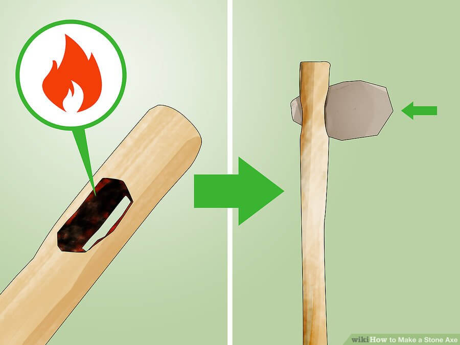
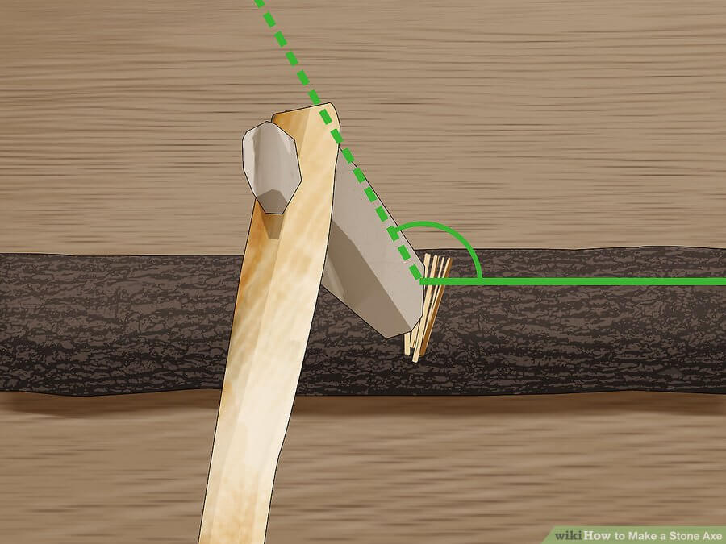

Flint Axe
1. Find a stable, level flat surface to work on, preferably in a well-ventilated area.
2. Lay your source rock on the flat surface and keep it steady with your non-dominant hand.
3. With the hammer rock in your dominant hand, slowly chip away at the source rock until it forms the shape of an axe head. Do remember that glancing, controlled blows at angles less than 90 degrees are preferred over perfectly-perpendicular power strikes.
4. Refine and sharpen the edge by using another flat slab as a whetstone. Pour some water on the “whetstone” and with slow, back-and-forth strokes, grind down any irregular peaks and sharpen the edge.
5. To further polish and refine the edge, scrape the edge on bark or animal hide if desired.
6. Set aside the axe head in the meantime, and proceed to making the wooden handle.
The handle
In a worst-case scenario, you can actually use the shaped stone axe head as a “hand-axe”, but crafting and incorporating it onto a handle makes it safer, and easier and more effective for bushcraft and self-defense purposes. For this guide, we’ll still show you how to make a working handle to widen your options.
To craft the handle, follow these steps:
1. Get freshly-cut “green” wood from a young tree. A branch or sapling two to three feet in length will suffice. You can use the axe head to cut down a sapling or branch.
2. Ensure that the wood is not too thick to hold, or too narrow to accommodate your axe head.
3. Strip off the bark; use a mussel-shaped flake as a scraper.
Keep the flakes as these can work as scrapers to strip wood off bark, or take the skin off wild game
To place the axe head in the handle, there are two methods. The first method uses cordage, while the other method doesn’t.
Method 1 (Requires the use of cordage):
1. With one of the sharp flakes, carefully split open one end of the handle. Make the gap large enough to fit the axe head, and as symmetrical as possible.
2. Gently slide the axe head into the split.
3. Secure with cordage like wire, fishing line, paracord or spruce roots. Wrap the cordage around the handle below the head. Then wrap the cordage in a diagonal direction across and on top of the head and around the handle above the head. Finally, wrap cordage from the handle above the head diagonally across the head to its bottom so that it forms an “X” on both sides of the axe head.
Method 2 (If you don’t have any cordage):
1. If you use this method, you’ll need to select a handle that has one end about 30% to 40% thicker than the back of the axe head.
2. Mark a spot a few inches below the top of your handle with your axe head; take note of the axe head’s width.
3. Use a sharp rock and your stone hammer to carve out a hole in the center of the handle a few inches from the top of the handle.
4. Continue carving, widening the hole just big enough to fit the axe head.
5. Heat a long stick in a fire until it’s burning and smoking; blow out the fire, keeping a red-hot ember on the end of the stick going.
6. Run the hot stick along the inside of the hole in the handle, smoothing out the hole so the axe head fits perfectly.
7. Insert the back of the axe head into the hole.
8. Carefully hammer the front of the axe head further in with a piece of wood until it’s secure. Small gaps between the handle and axe head are ok and will help prevent the head from separating from the handle during use.
Create a socket for the axe head within the handle by carving out a hole, smoothing it out with a hot ember then pushing in the axe head
Using your stone axe
Stone axes are unlike their steel cousins in that they can’t cut at the same angle. If you chop at precisely 90 degree angles, you risk breaking the stone axe head due to “side-slap”.
To cut down a standing tree, chop at it at an angle, never with the axe perfectly horizontal. If chopping a piece of wood lying on the ground, chop it at an angle just shy of 90 degrees.
Also, advise bystanders to stay well clear of you when you use the stone axe. Debris flies further with a stone axe than a steel one and can cause serious injury. Keep any bystanders in at least 10 feet away from your work area.
